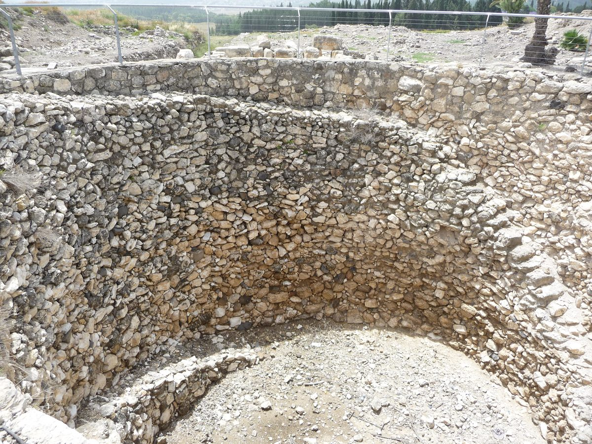

Joshua 12 — The Mister Translation

A shaft cut 35 metres straight down through solid rock, opening into a 100-metre tunnel bored to a hidden spring — Megiddo's answer to exactly the problem this chapter's bare king-list never mentions: a city worth a thousand years of siege needs water that a siege can't cut off. The engineering is Iron Age, centuries after the king this chapter strikes down (12:21), but it stands on the same tel and answers the same military logic that made Megiddo worth fighting over on every side of this book.

★★★ This chapter opens with a sentence it will say again, almost word for word, at v7 — and the repetition is the whole chapter's design. Ve'elleh malkhei ha-arets asher hikku…, ‘now these are the kings of the land whom… struck’, opens this section naming Moses and the sons of Israel as the strikers (v1) and opens the next naming Joshua and the sons of Israel (v7): one frame sentence, used twice, crediting two conquests to two leaders under the same formula. Nothing here is new history — Sihon's defeat and Og's were both narrated in full three books ago (Numbers 21:21–35, already on these pages) — but this is the first time the two border-descriptions are printed back to back as a single list, the east bank's whole conquest compressed into six verses before the west bank's even starts.
★★ Og is still ‘one of the remnant of the Rephaim’, and this book has not let that word go. Miyyeter ha-Rephaim repeats the phrase Deuteronomy 3:11 (already on these pages) used of the same king and his iron bedstead; Joshua 11 (now on these pages) just finished cutting off the Anakim everywhere except Gaza, Gath and Ashdod. Giants bracket this book's conquest on both sides of the river: one remnant named here as a border marker on the east, one remnant surviving in three named cities to the west — and one of those three cities is where Goliath will come from.
★ ‘The border of the Geshurites and the Maacathites’ is quoted, not restated — and it will be quoted once more, next chapter. The phrase stands in three verses of the Hebrew Bible: Deuteronomy 3:14 (already on these pages), where Jair's conquests inside Bashan reach that same border; this verse, which copies it without adding to it or narrowing it; and Joshua 13:11 (now on these pages), which copies it a third time. Both peoples are left exactly where Deuteronomy left them — outside the land Israel takes, never struck, never on a king-list at all.
★★ Moses and Joshua both ‘give it as a possession’, the identical verb and the identical noun. Vayyittenah… yerushah closes v6 of Moses' land exactly as it will close v7 of Joshua's — the two men framed as equal land-grantors under one formula, Moses' own grant to Reuben, Gad and half of Manasseh (Numbers 32, already on these pages) finally set down beside the inheritance Joshua is about to hand the other nine and a half tribes.
★★ ‘According to their divisions’ closes this sentence exactly as it closed the last chapter's own last sentence. Kemachlekotam repeats Joshua 11:23's closing word (now on these pages) — this chapter's whole roll call is framed as the fulfillment of that verse's claim that Joshua gave the land to Israel according to their divisions, by their tribes.
★★★ Six nations, in the order Joshua 9 already used — and the Girgashite dropped a second time. Joshua 9 (now on these pages) gathered ‘the Hittite, the Amorite, the Canaanite, the Perizzite, the Hivite and the Jebusite’ against Israel, the same six nations Deuteronomy 20:17 (already on these pages) names for the law of the ban; this verse lists them a second time, in the identical order. Deuteronomy 7:1 (already on these pages) names seven, with the Girgashite second; every occurrence of the Girgashite in the whole Hebrew Bible is a list, never a narrative, and this is the second list in this book that leaves the name out.
★ The roll call turns the conquest into arithmetic. Sixteen kings, named two to a verse, each counted with the bare word echad, ‘one’ — the stories are over, and what is left is a tally, the same shift from narrative to list this book already made once, for the twelve stones at the Jordan (Joshua 4, now on these pages).
★★★ Jerusalem's king is struck here, and the city never falls at all. This verse (v10) is the only place in the whole book of Joshua where Jerusalem is counted among the captured; its king dies in the cave at Makkedah (Joshua 10:26, now on these pages), but the city itself is never besieged, and Judges 1:21 (already on these pages) says outright that the Jebusite has dwelt with the sons of Benjamin in Jerusalem to this day — the same tension Judges 1's own note already named: a king struck is not the same as a city held, nowhere starker than at the city that will not actually change hands until 2 Samuel 5 (not yet on these pages).
★★ Gezer's king is on this list too, and so is the same unresolved ending. Joshua 10 (now on these pages) already named this pattern for Gezer by name: its king struck down at v33, its city never taken, and Judges 1:29 (already on these pages) confirms it — Ephraim never drove the Canaanite out, and the city changes hands only when an Egyptian pharaoh burns it and hands it to Solomon's wife as a dowry, generations later (1 Kings 9:16, not yet on these pages).
★★★ Arad and Hormah are listed among Joshua's kills, and this book never tells that story — because it already happened, under Moses. Numbers 21:1–3 (already on these pages) has a Canaanite king of Arad attack Israel in the wilderness and lose, the victory that renames the place Hormah — years before the Jordan is ever crossed, and nowhere in Joshua's own narrated campaigns. V7's heading credits every name on this list to ‘Joshua and the sons of Israel’; readings differ on whether that heading simply absorbs an earlier victory into the conquest's final tally, or whether a second, unnarrated strike against the same two names happened later and left no story behind it. This translation states both kings' presence on the list and does not resolve which it is.
★ Geder is named once in the whole Bible and never again. Not Gederah, not Gedor — a different spelling, a site no later text relocates or explains; its place on this list is the only thing known about it.
★★ Two kings in a row are titled by a stretch of country rather than a city. Melekh la-Sharon, ‘the king of the Sharon’ (v18), is the only place in the whole list where melekh governs a plain rather than a town — the Sharon is the coastal lowland running from Joppa toward Carmel, not a walled site with a name of its own. Readings differ on whether this reflects a genuinely regional lordship distinct from the pattern everywhere else on the list, or a city name that has simply not survived to be identified. The shelf splits exactly on that fork: KJV and ASV both print it as one word, a place-name, ‘Lasharon’; the NWT 1984 does the same, ‘Lassharon’, and the TNM 1987 follows suit in Spanish, «Lasarón» — every one of them reading the prefixed lamed as fused into a proper name, the same way every other king on this list is named. This translation separates the preposition and keeps the region instead, since no city called Lasharon is attested anywhere else in the Bible or in any external source.
★ This Aphek is usually identified with the one where the Philistines capture the ark — a different Aphek, in the Golan, is where Ben-hadad of Aram is later defeated. The Sharon-plain site named here is where most geographers also place the Aphek of 1 Samuel 4 (not yet on these pages), the battle that costs Eli's two sons their lives and the ark its place in the tabernacle — later still called Antipatris (Acts 23:31, not yet on these pages). A third Aphek, in the Golan, is where Ben-hadad of Aram is defeated (1 Kings 20, not yet on these pages); the name repeats because it simply means ‘fortress, stronghold’, not because the sites are connected.
★★★ Madon, Hazor, Shimron and Achshaph are the four names Joshua 11 (now on these pages) promised this chapter would repeat — and here they are, in nearly the order Jabin first summoned them. Jabin king of Hazor sent ‘to Jobab king of Madon, and to the king of Shimron, and to the king of Achshaph’ (11:1); this list counts Madon and Hazor in one verse and Shimron(-meron) and Achshaph in the next — the coalition's own roll call, settled now into the conquest's final tally. See Hazor.
★★ Taanach and Megiddo are named together here for the first time, and this will not be the last time they stand side by side doing nothing like what this verse claims for them. Both kings are struck, this verse says; both cities' Canaanites are still there a generation later, Manasseh having failed to drive either one out — Judges 1:27 (already on these pages) names Taanach, Dor and Megiddo together in the identical failure. Megiddo's own later name survives into the New Testament transliterated rather than translated: a place ‘called in Hebrew Harmagedon’ (Revelation 16:16, not yet on these pages, Greek Har Magedōn, confirmed a hapax in the archived Greek text) — a mountain's name, har, attached to a city that sits on a plain, a difficulty readers have resolved by appeal to a nearby height, to the mountain of assembly in prophetic imagery, or to a text no longer fully recoverable. This translation states the puzzle and does not resolve it.
★ Kedesh is a name this book will use again, for a different purpose, and the Jabin thread is not quite finished with it either. Deuteronomy 19 (already on these pages) legislated three cities of refuge without naming them; Kedesh will be named one of the six at Joshua 20 (not yet on these pages). It is also, generations later, the hometown of the general who finally breaks a king named Jabin, still ruling in Hazor (Judges 4:6, not yet on these pages) — the same two names, Jabin and Hazor, this book's own eleventh chapter already flagged as a title or a dynasty outliving a single king.
★ Jokneam's own Carmel is the mountain, not the man's town in Judah. La-Karmel here is the ridge running to the coast north of the Sharon, the site Elijah will make famous; a different Carmel, a town in Judah's hill country, is Nabal's home and Abigail's (1 Samuel 25, not yet on these pages). The consonants are identical and the places are not.
★★★ ‘The king of Goiim’ carries the identical title Genesis gave a Mesopotamian king nineteen chapters into the whole Bible — and the Greek text of this very verse relocates him. ‘King of Goiim’ stands in three verses of the Hebrew Bible: twice of Tidal, one of the four kings Abram's household routs, whose own title this project's own note on Genesis 14:1 (already on these pages) already reads as ‘king of Nations’ (the phrase recurs, unchanged, at 14:9), and this one. Whether the title names an actual confederacy called ‘the nations’ or is simply a king's own place-name is not stated either time; the KJV reads the title as the common noun outright, ‘the king of the nations of Gilgal’, where ASV and NWT 1984 both keep ‘Goiim’ as a name. The Masoretic Text locates this king le-Gilgal, ‘at Gilgal’; the Septuagint reads tēs Galilaias, ‘of Galilee’ — one consonant's difference in the Hebrew behind it. If the Greek preserves the older reading, this ‘king of the nations’ sat in the exact district Isaiah will later call gelil ha-goyim, ‘Galilee of the nations’ (Isaiah 8:23, not yet on these pages) — the very phrase Matthew quotes over the opening of Jesus' own ministry (Matthew 4:15, already on these pages). This translation follows the Masoretic Gilgal in the text and states the Greek variant and its reach forward in this note, neither adopting nor dismissing it.
★ Tirzah is a city for the first time; on these pages it was a woman first. The youngest of Zelophehad's five daughters lends her name, by a connection the Bible never explains, to the town that will become a royal seat of the northern kingdom (1 Kings 16:8, 23, not yet on these pages); her own encyclopedia entry (Numbers 26, already on these pages) already flagged that the name would outlive her as a place. This is where it does.
★★ Thirty-one, and the chapter's own arithmetic checks. Counted from v9 to v24, the list names exactly thirty-one kings, matching the summary's own kol-melakhim shloshim ve-echad; add Sihon and Og from vv2–4 and the two campaigns together have struck down thirty-three kings on both banks of the river — a single number this book has never before stopped to total, closing the conquest's own ledger the way Numbers once closed a census.
Echoes paid. Joshua 11:1's three summoned kings — Madon, Shimron and Achshaph — return at vv19–20, alongside Hazor itself, the coalition's own leader. Joshua 11:17's Mount-Halak-to-Baal-gad formula returns reversed at v7, Baal-gad to Mount Halak. Joshua 10's Jerusalem and Gezer, both struck but never taken, recur at vv10 and 12, now confirmed by Judges 1:21 and 1:29 (both already on these pages). Numbers 21:1–3's Arad and Hormah return at v14, struck once under Moses and listed again under Joshua's own tally. And the city sense of Tirzah, promised at the Zelophehad's-daughter entry written for Numbers 26, is confirmed at v24.
Echoes planted. Joshua 13:11 (now on these pages) quotes ‘the border of the Geshurites and the Maacathites’ a third time, unchanged. Joshua 15:13–17 will put Hebron and Debir on record a second time, inside Caleb's own inheritance (not yet on these pages). Joshua 16:10 will repeat that Gezer's Canaanites were never driven out. Joshua 19:15 and 19:25 will settle Shimron and Achshaph inside Zebulun and Asher. Joshua 20 will finally name Kedesh among the six cities of refuge this chapter only numbers in advance at Deuteronomy 19. Judges 1:27 and 1:29 (already on these pages) are the texts a reader reaches for the moment this chapter's tally of struck kings is read against what actually happened to Taanach, Megiddo, Dor and Gezer afterward. Judges 4 brings Jabin and Hazor back a second time, and sends its general home to Kedesh. And Revelation 16:16, far outside this project's current reach, still carries Megiddo's name into a mountain it does not sit on.
Decisions. Hebrew and English verse numbers align through the whole chapter. The Masoretic text breaks after nearly every king named in vv9–24 — a closed break, {ס}, after the first king in each pair, and an open or closed break, {ר}/{ף}, after the second — reproduced here as the source marks them rather than silently smoothed into one continuous list. ‘Jehovah’ for the tetragrammaton continues this project's convention; this is the only verse in the chapter that uses the name at all (v6, twice, of Moses). Nachal Arnon is ‘the valley of the Arnon’, as at Deuteronomy 2–4; ha-Aravah and ha-Shefelah are kept as names, as at Joshua 10–11; miyyeter ha-Rephaim is ‘one of the remnant of the Rephaim’, matching Deuteronomy 3:11's own phrase; the Geshurite/Maacathite border clause is quoted rather than reworded, matching Deuteronomy 3:14, and left unlinked, as that verse left it; yerushah is ‘a possession’; kemachlekotam is ‘according to their divisions’, matching Joshua 11:23; the six-nation list keeps Joshua 9's own order and omission; melekh…echad is rendered ‘the king of…, one’ throughout, the bare counting formula kept rather than smoothed into narrative prose; la-Sharon is kept as a region, ‘the Sharon’, not resolved to a place name; le-Nafat Dor is ‘the region of Dor’, matching Joshua 11:2's own ‘regions of Dor’; le-Gilgal is kept as the Masoretic reading, with the Septuagint's Galilee stated in the note rather than adopted in the text; and kol-melakhim shloshim ve-echad is ‘all the kings: thirty-one’.
Library. Eleven new encyclopedia entries in both languages: Geder, Tappuah, Hepher, Aphek (Sharon), the Sharon, Taanach, Megiddo, Kedesh, Jokneam, Dor and Goiim. Two existing encyclopedia entries extended in both languages: Arad and Hormah, whose own forward references to this chapter are now live links rather than bare citations. One extended for its place-sense: Tirzah. No new entries for Edrei, Salcah, the Geshurites or the Maacathites, matching how Deuteronomy 3 and Numbers 33 already left these same names unlinked on their own pages. Eighteen bare city names in this chapter's own list — Jericho, Ai, Jerusalem, Hebron, Jarmuth, Lachish, Eglon, Gezer, Debir, Hormah, Arad, Libnah, Adullam, Makkedah, Bethel, Madon, Hazor, Shimron and Achshaph — all link to entries already written for earlier chapters; no duplicates were created for names this book has already placed.
⚠ A note on order: Joshua stands on these pages at chapters 1–14. Joshua 15–24 remain the open sequence; next in this book is Joshua 15, where the lot actually falls for the first time, opening Judah’s own district list — and Caleb, now inside his own tribe’s share, sends his nephew Othniel after Kiriath-sepher for his daughter Achsah’s hand.